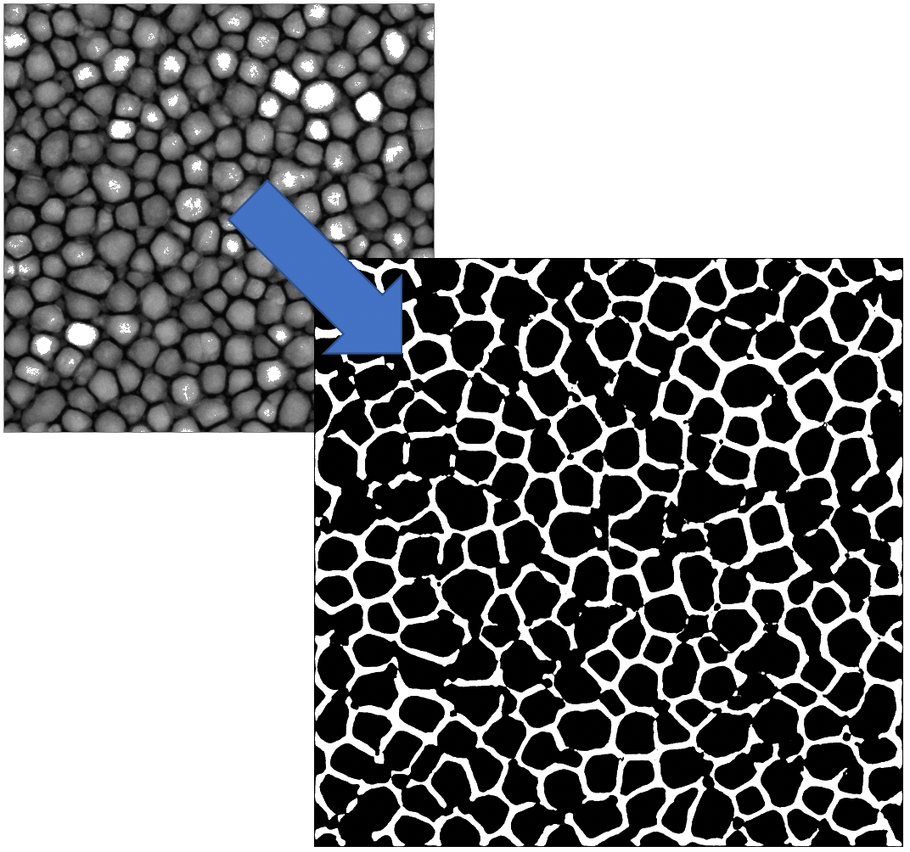

Mostly personal research lately, plus a few things from work. Some of it shipped, some of it is just me chasing an idea on a weekend. Roughly newest first.
My attempt at a small model that does real analytical work — a unified model and harness for running cheap analytical subagent workloads on a sub-2B model. I curated a SQL-based workflow-trace dataset across PEFT, OPD, and RL stages, then spent a while studying tool-use patterns to design a tool kit that's minimal but still generalizes to new workflows. The fun part was inference: Q4_K_M quantization plus self-speculative decoding and multi-token prediction get it to roughly 3× the base model's throughput.
Can you beat frontier vision-language models with a MacBook Pro and mostly homegrown data? Probably not — but I'm trying. So far that's an SSL-style regularizer on VAEs for ~8% better linear-probe scores, a from-scratch 295M-token dataset built around the MS-COCO categories, and a VAE↔LM bridge wired up with question-conditioned cross-attention, prefix calibration, and adapters.
A small, stateless tool that cuts token use and tool calls by about 66% on Markdown-heavy agentic workloads. I built an open eval set out of existing corpora, scraped READMEs, and my own docs, then used an adversarial multi-harness process to decide which features actually earned their keep. It quietly saves me money on everything else I'm building.
A spatially-grounded, OCR-focused VQA dataset that taught my small VLM to read about 12× better. I ran the whole thing as an agent-first loop — find the pipeline's weak spots, write and test a change, re-run — with a little companion app so I could ground that loop on real human feedback.
A redesign of our topics pipeline (700k+ news articles a day) that cost 33% less while improving quality. The interesting part was the eval suite — throughput, tiered topic quality against a Sonnet 4.6 teacher, and stability over time. I tested 180+ combinations of model, quantization, prompt, and vLLM config and landed on Qwen3.5-35B-A3B-FP8: about 92% of teacher quality for roughly 1% of the cost.

My internship project: a U-Net that segments microstructures in greyscale material images for the Hard Drive Materials team. Moving from a plain autoencoder to a U-Net — batch norm and skip connections — bumped pixel-classification accuracy by 33%, and running it locally made it about 20× faster.
Way back as an undergrad research assistant, I helped publish this one — building baseline models and locating the α value for a learned, iterative image-compression system. My first real taste of how research ML gets made.